Offsuit glass — element scorecard
Round 2 (before) vs round 3 (after). 58 elements × 11 categories. Scoring iteration 3 of 3; each iteration used fresh blind raters. Without the Motion category (whose fact sheet I wrote, and which can reveal the version): 7.5 → 7.8. Rater noise is about ±0.15: the same round-2 crops averaged 7.6 / 7.5 / 7.5. See SCORECARD.md for the method's limits. The scores are from fresh blind raters who saw both versions of each element in random A/B order. The original round-2-only rater's average is shown as a reference. Rubric: SCORECARD.md.
| Category | Hierarchy | Type | Colour | Material | Spacing | Consistency | States | Motion | Legibility | Craft | Apple fidelity | All |
|---|---|---|---|---|---|---|---|---|---|---|---|---|
| Before | 7.6 | 7.7 | 7.8 | 7.6 | 7.4 | 7.6 | 7.3 | 6.6 | 7.6 | 7.5 | 7.4 | 7.5 |
| After | 8.1 | 7.9 | 8.0 | 7.7 | 7.7 | 7.9 | 7.8 | 8.1 | 7.9 | 7.7 | 7.8 | 7.9 |
Biggest gains
| # | Element | Before | After | Gain | What changed |
|---|---|---|---|---|---|
| 1 | Slider and value | 6.6 | 7.9 | +1.3 | Track fills to the thumb centre; thumb rim + top light, hover/press scale, focus ring; value in a fixed 40px tabular slot with 8px trailing space |
| 2 | Bankroll figure | 6.9 | 8.1 | +1.2 | 34/600 ink-1 figure with a baseline-aligned mint +840 delta (mint = positive delta) |
| 3 | New session / Play with friends | 6.5 | 7.7 | +1.2 | One inset group (3% fill) of two rows: icon tile, title, one-line caption, chevron, row hover/press, inset focus ring |
| 4 | Coach off / Stats | 6.7 | 7.9 | +1.2 | 'Coach' is a real switch whose track fills mint when on (role map: mint = an ON switch); Stats a tertiary text button 16px away |
| 5 | Sizing presets + All-in | 6.7 | 7.8 | +1.1 | Small segmented group (½ ¾ at 15px, Pot, All-in) with aria-labels; the All-in shortcut in its tooltip; a 2px focus ring at a 2px offset |
| 6 | Verdict sheet | 6.9 | 8.0 | +1.1 | Two groups and one primary Close; coral only on severity + tick; table dimmed to 30% behind (no bloom); support at 56ch |
| 7 | Nav bar | 6.7 | 7.6 | +0.9 | Traffic-light inset; the coat runs under the toolbar (unified title bar) with one hairline; tabs grouped play/study/you with short 12px dividers; one sliding selected thumb |
| 8 | Start session CTA | 7.3 | 8.1 | +0.8 | Single-line large primary (36px, r8), a stronger top highlight and a soft drop; caption vertically centred beside it |
| 9 | Tab, active | 7.0 | 7.8 | +0.8 | Shared sliding selected thumb (fill 20% + 16% top light + 0.5px edge + shadow); press darkens |
| 10 | Recent hands rows | 6.8 | 7.6 | +0.8 | Rows in a 3% inset group that hugs its content: hover, chevron, 13/500 amounts, #index in ink-2 |
| 11 | Segmented controls | 7.1 | 7.9 | +0.8 | 13px labels in ink-2 #C0C6CD, a 3% track with an edge, the shared sliding thumb (220ms), hover/press fills |
| 12 | Mini cards | 7.2 | 8.0 | +0.8 | A dedicated 24px mini card (rank 12 over suit 11, centred), toned bone, small contact shadow |
| 13 | Dealer button | 7.0 | 7.7 | +0.7 | 22px disc, 11px/700, inner rim + top light, on the hero's card corner; arrives with a 420ms spring |
| 14 | Next problem button | 7.5 | 8.2 | +0.7 | Bone ramp, trailing keycap ↩ |
| 15 | Raise (primary) | 7.6 | 8.3 | +0.6 | Bone ramp: hover #FAF8F3, press #E2DFD6, 0.5px dark edge |
| 16 | Commit tray | 7.2 | 7.8 | +0.6 | The same thin float glass; 15/600 question; 28px controls; Sure/Guess in title case (the app uppercases in code) |
| 17 | Charts side column | 7.1 | 7.7 | +0.6 | Wider 288px column; classes as a flat list (name, cells, score; description below); rules 13px; tags; scrolls with an edge fade |
| 18 | Wordmark and logo | 7.1 | 7.7 | +0.6 | 14px SVG spade mark at cap height plus a 15/600 wordmark; mark only below 1040px |
| 19 | Tab, inactive | 7.4 | 7.9 | +0.5 | Hover fill-1 (8%), press fill-2 (13%); labels raised to ink-2 #C0C6CD |
| 20 | Hero seat | 7.1 | 7.6 | +0.5 | Type on the felt; your turn = a soft light pool + the mint status; dealer puck tucked on the left card's corner |
| 21 | Drill kind + tally | 7.4 | 7.9 | +0.5 | One level-2 picker with a checkmark and the session tally trailing each kind, plus an 'All kinds' total (no duplicate list) |
| 22 | Plan rows | 7.1 | 7.6 | +0.5 | Flat list: label · pct · min · count; zero rows in ink-2; notes indented 16px |
| 23 | Price line | 7.7 | 8.1 | +0.4 | 13px with the two figures in ink-1/500 |
| 24 | Bet chip and amount | 7.4 | 7.7 | +0.4 | On the seat→pot line, 13/600 amount, slides in; crisp chips (no CSS filter blur; the contact shadow is drawn in the SVG) |
| 25 | Gate sheet | 7.5 | 7.8 | +0.4 | Sheet glass over a strongly dimmed, blurred table (no bloom); 32px field + button; a 1.5px focus ring at a 2px offset; budget as a progressbar; the timer exempt from reduced motion |
| 26 | Quiz bar | 7.4 | 7.7 | +0.4 | Horizontal group (no separators); trailing keycaps 'open O' |
| 27 | Skip button | 7.5 | 7.9 | +0.4 | Tertiary (plain) button on the shared ramp |
| 28 | Meter | 7.6 | 8.0 | +0.4 | 4px bar: dim fill to the price, bright band for the surplus over it, 2px coral price tick, 0/100% endpoints |
| 29 | Band + you said / answer | 7.6 | 8.0 | +0.4 | Band sentence 15/600 ink-1, coral only on the wrong value, the shared stat component, a 320ms reveal |
| 30 | Plan a sitting panel | 7.5 | 7.8 | +0.3 | Title row; Length/Mode beside their labels; flat hairline table and footer; CTA with a vertically centred caption; coat blur 18px so no crisp contour sits under text |
| 31 | "What a shorter sitting gave up" | 7.7 | 8.0 | +0.3 | Section label + a flat two-column row (label, value) and a caption footer |
| 32 | Rail | 7.7 | 8.0 | +0.3 | Top-arc sheen 13%, a bottom shade, a 1.5px top light at 16%; the rail casts onto the felt |
| 33 | Committed choices | 7.8 | 8.0 | +0.2 | 12px lead-in 'You committed to Fold, Sure' above the neutral result (the result keeps the app's 'SURE') |
| 34 | Support copy | 7.8 | 8.0 | +0.2 | 12px ink-2 at 1.55, measure capped at 56ch; copy verbatim |
| 35 | Severity label | 7.9 | 8.1 | +0.2 | A 13px warning glyph + 'Serious' in coral; no light behind the header |
| 36 | Quip | 7.7 | 7.9 | +0.2 | Regular 12px ink-2 in curly quotes; fades in after the deal |
| 37 | Card backs | 7.8 | 8.0 | +0.2 | Fine ±60° lattice + 16% spade monogram, soft sheen, single frame; deal 420ms with a soft spring |
| 38 | Board cards | 8.4 | 8.5 | +0.2 | Unchanged artwork; deal 640 → 420ms with a soft spring, 45ms stagger |
| 39 | Felt | 7.9 | 8.0 | +0.1 | A single-direction 0.5px weave at 3.5% plus finer noise; the lamp 7.5% → 9% |
| 40 | Villain name + archetype + stack | 7.9 | 8.0 | +0.1 | The archetype is an inline 11/500 ink-2 suffix (real hidden label kept) |
| 41 | Pot | 8.0 | 8.1 | +0.1 | Label 12/500 ink-2, value 17/600 |
| 42 | Chart grid | 7.5 | 7.5 | +0.1 | Three states: open 26% flat, fold 3.5%, boundary = a 10px corner notch; 11px; row-staggered fade-in |
| 43 | Villain seat | 7.8 | 7.9 | +0.1 | Cards top-aligned to the name; 13/600 name, 11/500 archetype and 12px quip in ink-2 (AA on felt), 13/500 stack; deal 420ms spring |
| 44 | Table-depth label | 7.5 | 7.5 | +0.0 | 15/500 value + the shared 12/500 label on the same stat component and baseline |
| 45 | Empty board slots | 8.0 | 8.0 | +0.0 | Deeper inset well (24% black, inset shadow, bottom lip highlight), above the weave; aria-label 'turn/river, to come' |
| 46 | Your-turn indicator | 7.6 | 7.6 | +0.0 | 13/500 mint with a slow 2.4s breathing dot (off under reduced motion) |
| 47 | Fold / Check / Call | 7.6 | 7.6 | +0.0 | Secondary ramp (8/13/18%); disabled Check keeps a quiet hairline container and ink-3 text |
| 48 | Chart cells (detail) | 7.7 | 7.7 | +0.0 | Flat cells with a ≥1.6:1 open/fold luminance step; boundary corner notch; hover lift |
| 49 | Train sub-nav | 7.9 | 7.9 | +0.0 | Source-list selection (fill-1, no shadow) distinct from the toolbar thumb |
| 50 | Method steps | 8.0 | 8.0 | +0.0 | Tertiary tabular numerals inside the content edge, 13px at 1.5 |
| 51 | Hero cards | 8.4 | 8.3 | -0.1 | Unchanged artwork; deal 420ms spring |
| 52 | Shortcut hints | 7.6 | 7.5 | -0.1 | Trailing keycaps (18px, r4, edge + bottom shade, ink-1 glyph); only real hotkeys get one |
| 53 | Action dock | 7.5 | 7.5 | -0.1 | Lighter, thinner glass (L .32 at 34%, blur 26 / saturate 175%), a 20% top highlight and a gradient rim; r14 = 8 + 6 |
| 54 | +/− results | 8.0 | 7.9 | -0.1 | 13/500 tabular amounts with the U+2212 minus; mint/coral by the role map |
| 55 | Question | 8.0 | 7.9 | -0.1 | 22/600 title on the now-frosted coat |
| 56 | Chart legend | 7.9 | 7.8 | -0.1 | Three swatches matching the cells (with a hairline), boundary shown with the same notch |
| 57 | Blinds label | 7.9 | 7.7 | -0.2 | 12px ink-3 metadata on the same 28px row as the controls |
| 58 | Suggested next block | 7.8 | 7.2 | -0.6 | A plain hairline section: action row (title, body, chevron) whose hover rect bleeds into the gutter so text sits on the section edge; Skip as a small secondary button |
Lowest remaining (after)
| Element | After avg | Lowest category | Rater's reason |
|---|---|---|---|
| Suggested next block | 7.2 | Spacing 6 | eyebrow 'Suggested next' is separated from its title by a hairline and 40px; keep eyebrow within 8px of the title |
| Action dock | 7.5 | Type 7 | '150' 20px/600 is the heaviest figure and competes with Raise; 17px/500 tabular. |
| Table-depth label | 7.5 | Hierarchy 7 | '40bb table' is near the weight of the bankroll label and competes; drop to 15px/500 |
| Shortcut hints | 7.5 | Hierarchy 7 | Boxed keycap gives the hint near-equal weight to 'Call 75'; recess it to plain text. |
| Chart grid | 7.5 | Material 7 | Open cells are opaque mid-grey tiles; lower to ~18% white with a 0.5px edge. |
| Plan rows | 7.6 | Material 6 | dune bands show through the rows with high contrast (dark wedge behind 'graded spots'); raise the coat fill to flatten the backdrop under dense data |
| Nav bar | 7.6 | Material 7 | bar fill is near-opaque navy; drop to ~65-70% so the dune coat reads, keep the bottom hairline |
| Recent hands rows | 7.6 | Material 7 | the first row shows a lighter band from the backdrop through the group, so row fills look uneven; raise the group fill so it reads as one coat |
| Hero seat | 7.6 | Type 7 | 'Your turn' 16px is larger than the 'You' label; set status 13-14px/500. |
| Your-turn indicator | 7.6 | Type 7 | 16px status is larger than the 'You' label; 13-14px/500. |
| Fold / Check / Call | 7.6 | Material 7 | 8% fills with 1px borders read as flat tiles; add a 1px top highlight and drop border to 0.5px. |
| Wordmark and logo | 7.7 | Type 7 | wordmark 600 at ~17px with default tracking; tighten to -0.01em for display weight |
Every element
| Hierarchy | Type | Colour | Material | Spacing | Consistency | States | Motion | Legibility | Craft | Apple fidelity | Avg | |
|---|---|---|---|---|---|---|---|---|---|---|---|---|
| Before | 7 | 7 | 7 | 8 | 7 | 7 | 8 | n/a | 8 | 6 | 6 | 7.1 |
| After | 8 | 7 | 8 | 8 | 7 | 8 | 8 | n/a | 9 | 7 | 7 | 7.7 |
Hierarchy: spade at ~45% grey reads as disabled next to white text; tint it to ~70% or full white
Type: wordmark weight 600 at a smaller size than the tabs' visual mass; bump to 17px
Colour: grey spade has no role; use the same neutral as text or the brand accent
14px SVG spade mark at cap height plus a 15/600 wordmark; mark only below 1040px
A brand anchor and a crisp glyph
Type: wordmark 600 at ~17px with default tracking; tighten to -0.01em for display weight
Spacing: spade-to-text gap ~8px is tight for a 16px glyph; use 10px
Craft: spade glyph sits optically high relative to the x-height; nudge down 1px
Apple fidelity: glyph is a generic font spade; draw a custom mark with refined curves
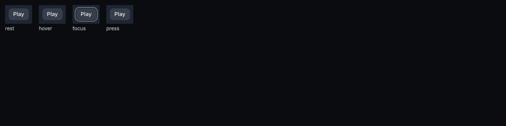
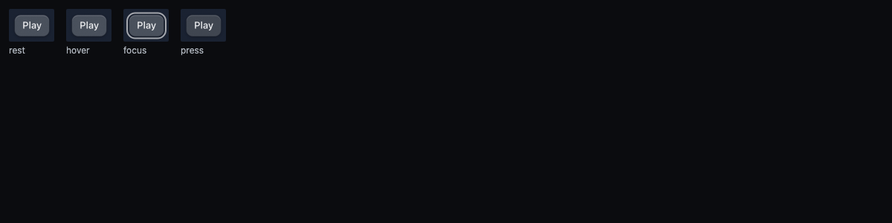
| Hierarchy | Type | Colour | Material | Spacing | Consistency | States | Motion | Legibility | Craft | Apple fidelity | Avg | |
|---|---|---|---|---|---|---|---|---|---|---|---|---|
| Before | 8 | 7 | 8 | 6 | 8 | 8 | 6 | 5 | 7 | 7 | 7 | 7.0 |
| After | 8 | 7 | 8 | 7 | 8 | 8 | 7 | 9 | 8 | 8 | 8 | 7.8 |
Type: 13px/500 label in a 34px pill feels small; use SF semibold
Material: thumb is a flat slab with no edge; add a top-edge highlight and slightly lower fill
States: hover 3.5% and press are near-identical to rest; use 8%/13% ramp
Shared sliding selected thumb (fill 20% + 16% top light + 0.5px edge + shadow); press darkens
One selection material everywhere
Type: 13px/500 label in a 34px pill feels small; use 13px/590 (SF semibold) to match macOS toolbar selection
Material: thumb is a flat grey fill without edge light; add 0.5px top inner highlight at ~12% white
States: hover on the selected tab is indistinguishable from rest; either suppress hover on selected or lift fill +3%
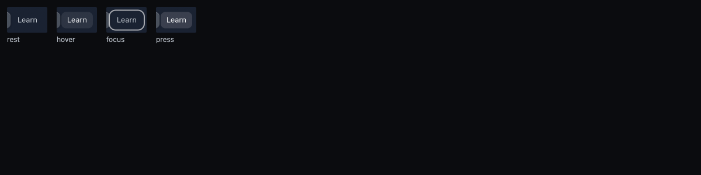
| Hierarchy | Type | Colour | Material | Spacing | Consistency | States | Motion | Legibility | Craft | Apple fidelity | Avg | |
|---|---|---|---|---|---|---|---|---|---|---|---|---|
| Before | 8 | 8 | 8 | 8 | 8 | 8 | 6 | 6 | 7 | 7 | 7 | 7.4 |
| After | 8 | 8 | 8 | 8 | 8 | 8 | 8 | 7 | 8 | 8 | 8 | 7.9 |
States: hover 3.5% is barely perceptible and there is no press state; use 8% hover, 13% press
Motion: no press feedback; add 80ms fill darken on press
Legibility: focus ring is 1px grey with low contrast on navy; make it 2px at ~70% white
Hover fill-1 (8%), press fill-2 (13%); labels raised to ink-2 #C0C6CD
One state ramp
Motion: fills step at 120ms with no press release easing; add 80ms ease-out on release
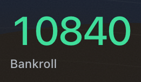
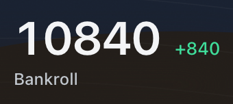
| Hierarchy | Type | Colour | Material | Spacing | Consistency | States | Motion | Legibility | Craft | Apple fidelity | Avg | |
|---|---|---|---|---|---|---|---|---|---|---|---|---|
| Before | 8 | 7 | 5 | 8 | 7 | 6 | 7 | n/a | 8 | 7 | 6 | 6.9 |
| After | 9 | 8 | 9 | 8 | 7 | 8 | 8 | n/a | 8 | 8 | 8 | 8.1 |
Type: display weight is light (~400) at ~48px; use 600-700 with -0.02em tracking and tabular figures
Colour: bankroll balance painted mint green; green should mean gain, not a resting balance; set the figure in primary white and keep green for the delta
Spacing: label 'Bankroll' sits 12px below with a different left edge (figure's optical side bearing); optically align the '1' to the label
34/600 ink-1 figure with a baseline-aligned mint +840 delta (mint = positive delta)
Colour role map; type scale
Spacing: the +840 delta floats at mid-height of the figure; baseline-align it to the figure baseline or to the cap line
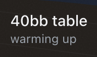
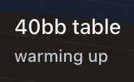
| Hierarchy | Type | Colour | Material | Spacing | Consistency | States | Motion | Legibility | Craft | Apple fidelity | Avg | |
|---|---|---|---|---|---|---|---|---|---|---|---|---|
| Before | 7 | 8 | 8 | 8 | 7 | 8 | 7 | n/a | 7 | 8 | 7 | 7.5 |
| After | 7 | 8 | 8 | 8 | 7 | 7 | 7 | n/a | 8 | 8 | 7 | 7.5 |
Hierarchy: title competes with the bankroll label; drop to 15px/500
Spacing: subtitle baseline is not aligned with 'Bankroll'; align them
States: no indication of what 'warming up' means; add a tooltip or link
15/500 value + the shared 12/500 label on the same stat component and baseline
One stat component
Hierarchy: '40bb table' is near the weight of the bankroll label and competes; drop to 15px/500
Spacing: block baseline does not align with the bankroll figure or label; align its subtitle baseline to 'Bankroll'
Consistency: subtitle grey is lighter than other secondary text on the page; use the shared secondary token
States: reads as static info but motion-facts list a press ramp; make it purely static or give it a disclosure affordance
Apple fidelity: stat pair lacks a shared baseline grid, unlike system stat rows
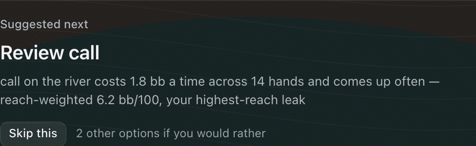
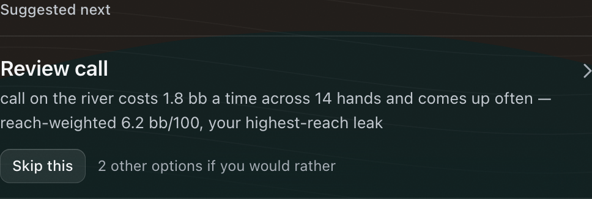
| Hierarchy | Type | Colour | Material | Spacing | Consistency | States | Motion | Legibility | Craft | Apple fidelity | Avg | |
|---|---|---|---|---|---|---|---|---|---|---|---|---|
| Before | 8 | 8 | 8 | 8 | 8 | 8 | 7 | 7 | 8 | 8 | 8 | 7.8 |
| After | 7 | 8 | 8 | 7 | 6 | 7 | 7 | 7 | 8 | 7 | 7 | 7.2 |
States: block has hover/press but no visual affordance; make it static and let 'Skip this' carry the interaction
Motion: press scale on the whole block is unnecessary; remove
A plain hairline section: action row (title, body, chevron) whose hover rect bleeds into the gutter so text sits on the section edge; Skip as a small secondary button
A clear primary → tertiary order
Hierarchy: chevron at the far right implies the whole block is a link, but 'Skip this' is a separate control inside it; drop the chevron or make the title the link
Material: block sits in the coat but the hairline above the title cuts the eyebrow off from its content; remove that divider
Spacing: eyebrow 'Suggested next' is separated from its title by a hairline and 40px; keep eyebrow within 8px of the title
Consistency: the chevron treatment here differs from the tile rows below; use the same row pattern
States: whole-block hover ramp plus an inner button makes nested hit targets; scope hover to the title row
Motion: press scale 0.98 on a large text block feels heavy; use fill only
Craft: chevron sits at the title line, far from the content mass; vertically centre it or remove it
Apple fidelity: nested interactive targets are not a system pattern
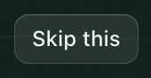
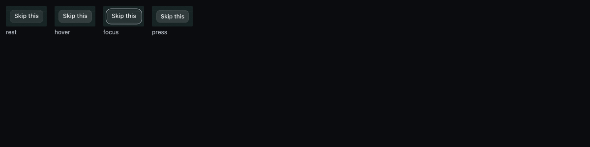
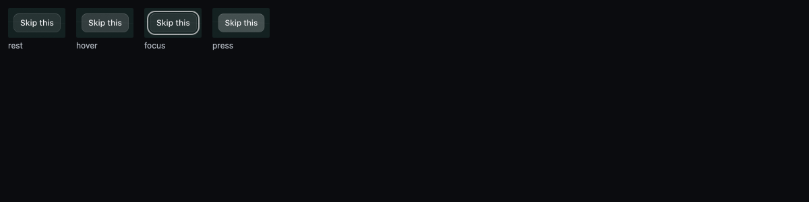
| Hierarchy | Type | Colour | Material | Spacing | Consistency | States | Motion | Legibility | Craft | Apple fidelity | Avg | |
|---|---|---|---|---|---|---|---|---|---|---|---|---|
| Before | 8 | 8 | 8 | 7 | 8 | 8 | 7 | 7 | 7 | 8 | 7 | 7.5 |
| After | 8 | 8 | 8 | 7 | 8 | 8 | 8 | 8 | 8 | 8 | 8 | 7.9 |
Material: pill fill is a flat 8% slab; add a 0.5px top highlight
States: hover is nearly indistinguishable from rest; use the 8/13/18% ramp
Motion: press scale 0.97 is fine but no hover easing on release; add 80ms out
Tertiary (plain) button on the shared ramp
Button ranks
Material: pill fill is a flat slab; add a 0.5px top-edge highlight
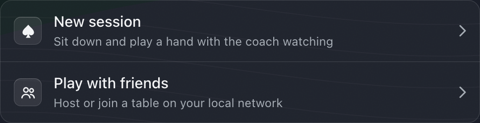
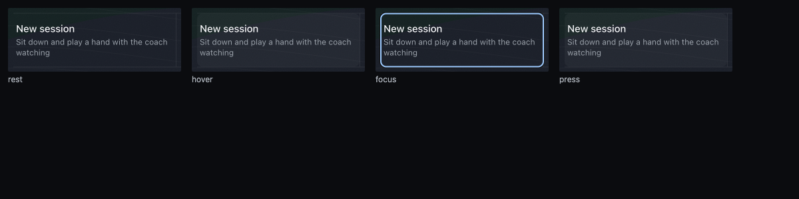
| Hierarchy | Type | Colour | Material | Spacing | Consistency | States | Motion | Legibility | Craft | Apple fidelity | Avg | |
|---|---|---|---|---|---|---|---|---|---|---|---|---|
| Before | 6 | 8 | 8 | 7 | 7 | 6 | 5 | 6 | 7 | 6 | 6 | 6.5 |
| After | 8 | 8 | 8 | 7 | 8 | 8 | 7 | 8 | 8 | 7 | 8 | 7.7 |
Hierarchy: two primary entry points look like static paragraphs; add a leading icon and chevron so they read as actions
Material: no container; the vertical divider is the only structure; put them in an inset grouped list at the coat fill
Spacing: descriptions wrap to two lines while the row height is fixed; widen or allow single-line
One inset group (3% fill) of two rows: icon tile, title, one-line caption, chevron, row hover/press, inset focus ring
Apple grouped-list grammar
Material: group fill and border are fine but the icon wells are opaque slabs; lower to ~10% white
States: hover lift from rest is small; press reads lighter rather than darker; press should deepen
Craft: focus ring is square-cornered (~4px) inside a 14px container radius; match radius minus inset
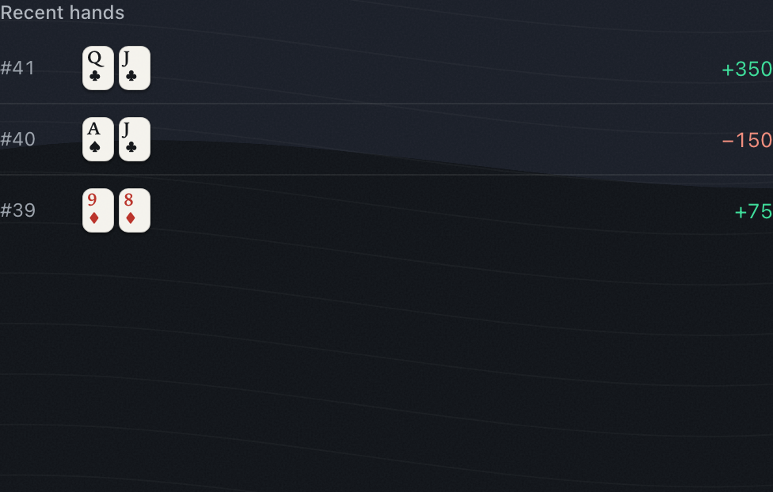
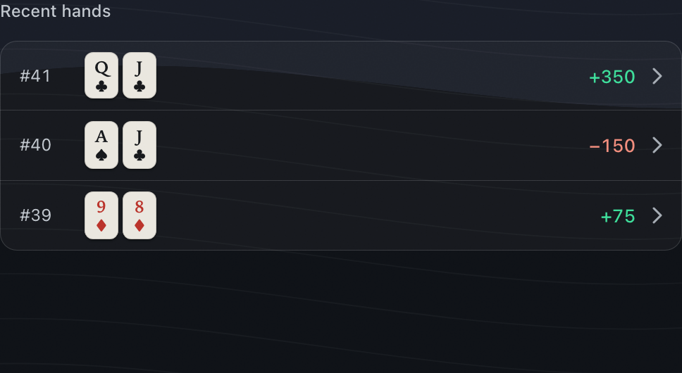
| Hierarchy | Type | Colour | Material | Spacing | Consistency | States | Motion | Legibility | Craft | Apple fidelity | Avg | |
|---|---|---|---|---|---|---|---|---|---|---|---|---|
| Before | 7 | 8 | 8 | 7 | 6 | 7 | 5 | 6 | 8 | 7 | 6 | 6.8 |
| After | 8 | 8 | 8 | 7 | 8 | 8 | 7 | 7 | 8 | 7 | 8 | 7.6 |
Hierarchy: rows have no container so amounts float at the far edge; group them
Material: no container; rows sit on the dune with dividers cutting through the bands
Spacing: amounts flush to the far right with no padding and a large empty zone below; add 16px inset padding and group the list
Rows in a 3% inset group that hugs its content: hover, chevron, 13/500 amounts, #index in ink-2
Rows read as openable; no void
Material: the first row shows a lighter band from the backdrop through the group, so row fills look uneven; raise the group fill so it reads as one coat
States: chevrons signal tap but hover feedback is not visible; use the 8% row hover
Motion: press scale on a list row is non-system; use fill only
Craft: row number column and cards are not optically aligned to the header 'Recent hands' left edge; inset header to match
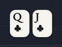
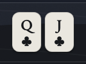
| Hierarchy | Type | Colour | Material | Spacing | Consistency | States | Motion | Legibility | Craft | Apple fidelity | Avg | |
|---|---|---|---|---|---|---|---|---|---|---|---|---|
| Before | 7 | 8 | 8 | 8 | 6 | 7 | 8 | n/a | 7 | 6 | 7 | 7.2 |
| After | 8 | 8 | 8 | 8 | 8 | 8 | 8 | n/a | 8 | 8 | 8 | 8.0 |
Hierarchy: cards shrink and the index competes with the suit; scale up to ~40px wide
Spacing: cards are 4px apart and the index crowds the top-left corner; use 6px gap and 4px corner padding
Consistency: index proportion differs from the table cards; match their corner layout
A dedicated 24px mini card (rank 12 over suit 11, centred), toned bone, small contact shadow
Optical small size and quieter emphasis
All categories ≥ 8
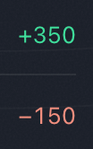
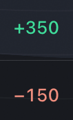
| Hierarchy | Type | Colour | Material | Spacing | Consistency | States | Motion | Legibility | Craft | Apple fidelity | Avg | |
|---|---|---|---|---|---|---|---|---|---|---|---|---|
| Before | 8 | 8 | 8 | 8 | 8 | 8 | 8 | n/a | 8 | 8 | 8 | 8.0 |
| After | 8 | 8 | 8 | 8 | 7 | 8 | 8 | n/a | 8 | 8 | 8 | 7.9 |
13/400, lighter than the cards
13/500 tabular amounts with the U+2212 minus; mint/coral by the role map
The outcome leads the row
Spacing: crop shows the amount touching the divider area with little vertical padding; centre within the row
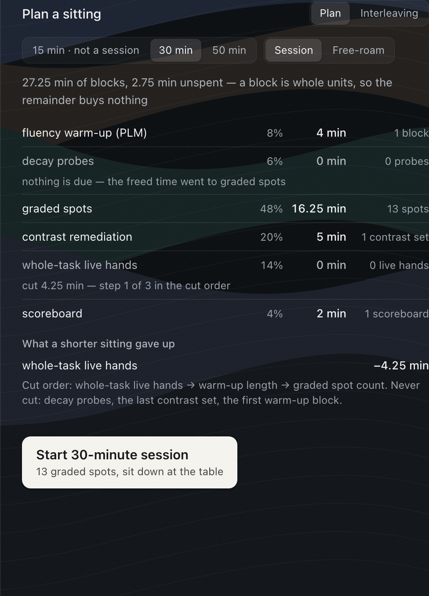
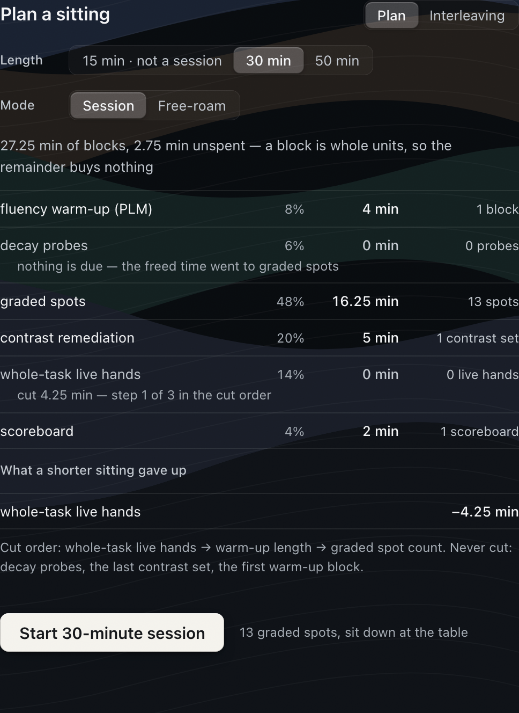
| Hierarchy | Type | Colour | Material | Spacing | Consistency | States | Motion | Legibility | Craft | Apple fidelity | Avg | |
|---|---|---|---|---|---|---|---|---|---|---|---|---|
| Before | 7 | 8 | 8 | 7 | 7 | 8 | 7 | n/a | 8 | 8 | 7 | 7.5 |
| After | 8 | 8 | 8 | 7 | 7 | 8 | 8 | n/a | 8 | 8 | 8 | 7.8 |
Hierarchy: two unlabelled segmented controls side by side read as one control; label them or stack them
Material: panel has no edge; bands bleed through unevenly
Spacing: CTA card sits 64px below with a dead zone beneath; tighten to 32px
Title row; Length/Mode beside their labels; flat hairline table and footer; CTA with a vertically centred caption; coat blur 18px so no crisp contour sits under text
Form-style grouping
Material: panel has no edge; the dune bands show through rows unevenly; raise coat fill behind the panel
Spacing: 'Length'/'Mode' labels baseline sits ~4px above segment text; vertically centre labels to the control
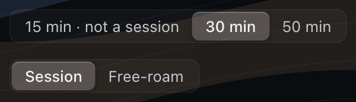
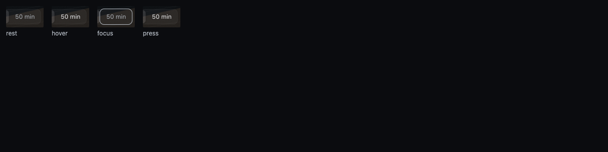
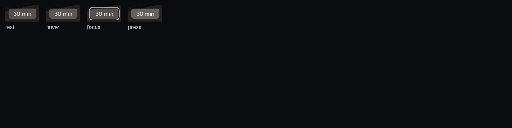
| Hierarchy | Type | Colour | Material | Spacing | Consistency | States | Motion | Legibility | Craft | Apple fidelity | Avg | |
|---|---|---|---|---|---|---|---|---|---|---|---|---|
| Before | 7 | 8 | 8 | 7 | 8 | 8 | 6 | 5 | 7 | 7 | 7 | 7.1 |
| After | 8 | 8 | 8 | 7 | 8 | 8 | 7 | 9 | 8 | 8 | 8 | 7.9 |
Hierarchy: selected segment fill (~10%) is weak against the track; raise thumb to ~16% and weight 590
Material: thumb is flat with no edge
States: hover only brightens text; no press fill; add 4%/8% fills
13px labels in ink-2 #C0C6CD, a 3% track with an edge, the shared sliding thumb (220ms), hover/press fills
NSSegmentedControl fidelity
Material: thumb is a flat grey slab; add a 0.5px top highlight and soft shadow like NSSegmentedControl
States: hover and press on the selected segment are near-identical to rest; suppress or lift fill +4%
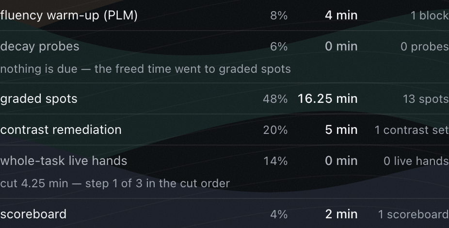
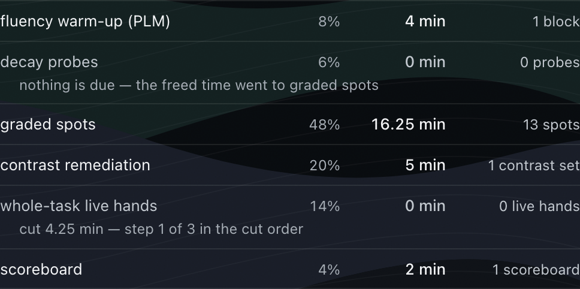
| Hierarchy | Type | Colour | Material | Spacing | Consistency | States | Motion | Legibility | Craft | Apple fidelity | Avg | |
|---|---|---|---|---|---|---|---|---|---|---|---|---|
| Before | 7 | 8 | 8 | 6 | 6 | 7 | 8 | n/a | 7 | 7 | 7 | 7.1 |
| After | 8 | 8 | 8 | 6 | 8 | 8 | 8 | n/a | 7 | 8 | 7 | 7.6 |
Hierarchy: sub-notes are not indented so they read as rows; indent 16px
Material: dune bands show through rows with high contrast; flatten under data
Spacing: '48%' and '16.25 min' columns nearly collide; widen the min column or right-align percent with more gap
Flat list: label · pct · min · count; zero rows in ink-2; notes indented 16px
Fewer styles; clear zero state
Material: dune bands show through the rows with high contrast (dark wedge behind 'graded spots'); raise the coat fill to flatten the backdrop under dense data
Legibility: grey sub-notes on the dark band dip near 4.5:1; lift to ~62%
Apple fidelity: backdrop pattern competing with tabular data is not how macOS treats list content
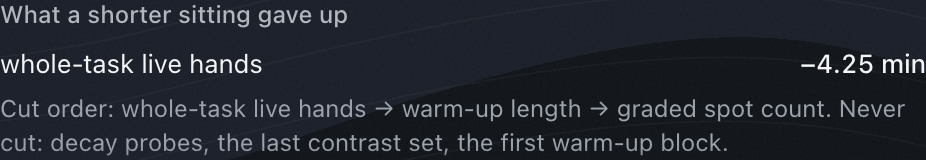
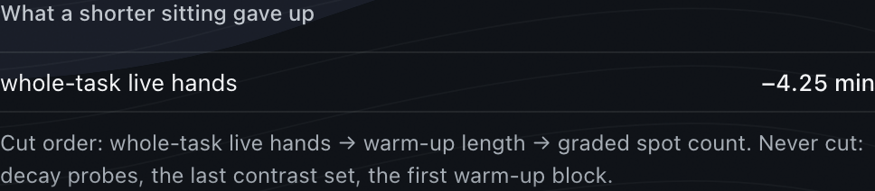
| Hierarchy | Type | Colour | Material | Spacing | Consistency | States | Motion | Legibility | Craft | Apple fidelity | Avg | |
|---|---|---|---|---|---|---|---|---|---|---|---|---|
| Before | 7 | 8 | 8 | 7 | 7 | 8 | 8 | n/a | 8 | 8 | 8 | 7.7 |
| After | 8 | 8 | 8 | 8 | 8 | 8 | 8 | n/a | 8 | 8 | 8 | 8.0 |
Hierarchy: heading, row and note are spaced evenly so the row does not stand out; add 12px above the row
Material: no surface; it floats on the dune; fine but add a divider to separate it from the plan rows
Spacing: heading-to-row gap equals row-to-note gap; use 12/6px
Section label + a flat two-column row (label, value) and a caption footer
Aligned values, honest grouping
All categories ≥ 8
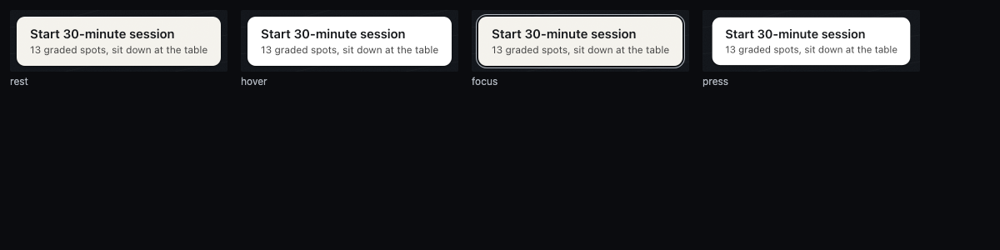
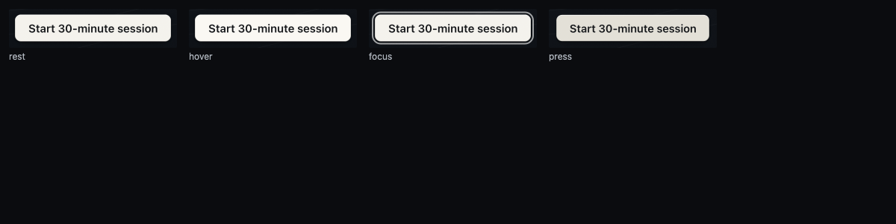
| Hierarchy | Type | Colour | Material | Spacing | Consistency | States | Motion | Legibility | Craft | Apple fidelity | Avg | |
|---|---|---|---|---|---|---|---|---|---|---|---|---|
| Before | 8 | 8 | 8 | 7 | 7 | 7 | 6 | 7 | 8 | 7 | 7 | 7.3 |
| After | 9 | 8 | 8 | 8 | 8 | 8 | 8 | 8 | 8 | 8 | 8 | 8.1 |
Material: tall bone card is an opaque slab; reduce height or use a standard 44px primary button
Spacing: two-line card is 60px tall with 32px padding; tighten padding or move the caption out
Consistency: other primaries (Raise) are single-line pills; match
Single-line large primary (36px, r8), a stronger top highlight and a soft drop; caption vertically centred beside it
One primary-button spec
All categories ≥ 8
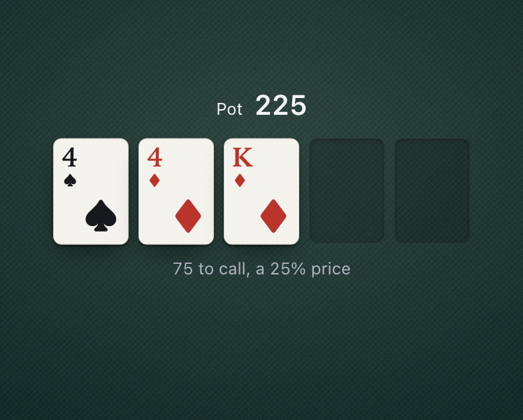
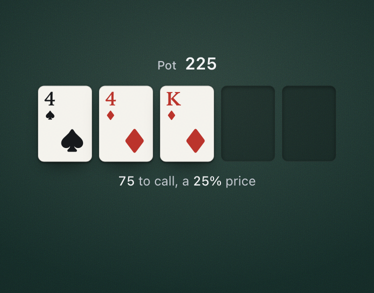
| Hierarchy | Type | Colour | Material | Spacing | Consistency | States | Motion | Legibility | Craft | Apple fidelity | Avg | |
|---|---|---|---|---|---|---|---|---|---|---|---|---|
| Before | 8 | 8 | 8 | 8 | 8 | 8 | 8 | n/a | 8 | 7 | 8 | 7.9 |
| After | 8 | 8 | 8 | 8 | 8 | 8 | 8 | n/a | 8 | 8 | 8 | 8.0 |
Craft: diamond cross-hatch is visible at DPR2 and adds moire under the cards; reduce texture contrast ~40%
A single-direction 0.5px weave at 3.5% plus finer noise; the lamp 7.5% → 9%
Wool, not mesh
All categories ≥ 8
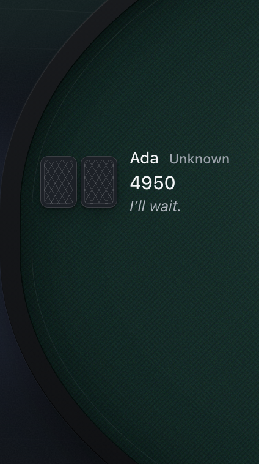
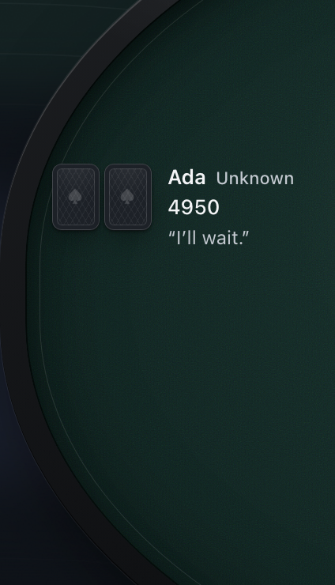
| Hierarchy | Type | Colour | Material | Spacing | Consistency | States | Motion | Legibility | Craft | Apple fidelity | Avg | |
|---|---|---|---|---|---|---|---|---|---|---|---|---|
| Before | 8 | 8 | 8 | 7 | 8 | 8 | 8 | n/a | 8 | 7 | 7 | 7.7 |
| After | 8 | 8 | 8 | 8 | 8 | 8 | 8 | n/a | 8 | 8 | 8 | 8.0 |
Material: rail is a matte charcoal band with little light; add a faint top-edge sheen
Craft: inner rule is barely visible and the bevel reads flat; strengthen the inner 1px at ~8% white
Apple fidelity: rail looks flat-modelled rather than physically lit
Top-arc sheen 13%, a bottom shade, a 1.5px top light at 16%; the rail casts onto the felt
One plausible light source
All categories ≥ 8
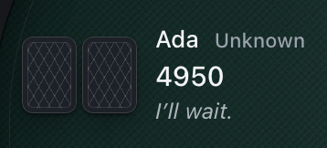
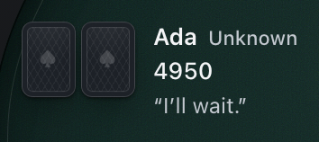
| Hierarchy | Type | Colour | Material | Spacing | Consistency | States | Motion | Legibility | Craft | Apple fidelity | Avg | |
|---|---|---|---|---|---|---|---|---|---|---|---|---|
| Before | 8 | 8 | 8 | 8 | 8 | 8 | 8 | 6 | 8 | 8 | 8 | 7.8 |
| After | 8 | 8 | 8 | 8 | 8 | 8 | 8 | 8 | 7 | 8 | 8 | 7.9 |
Motion: cards deal in 640ms (slow for two cards) and the quip is static; use a ~420ms spring and fade the quip in after the deal
Cards top-aligned to the name; 13/600 name, 11/500 archetype and 12px quip in ink-2 (AA on felt), 13/500 stack; deal 420ms spring
A tighter type ramp
Legibility: quoted quip at ~55% grey on felt is near 4.5:1; lift to ~65%
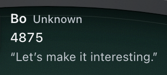
| Hierarchy | Type | Colour | Material | Spacing | Consistency | States | Motion | Legibility | Craft | Apple fidelity | Avg | |
|---|---|---|---|---|---|---|---|---|---|---|---|---|
| Before | 7 | 8 | 8 | 8 | 8 | 8 | 8 | n/a | 8 | 8 | 8 | 7.9 |
| After | 8 | 8 | 8 | 8 | 8 | 8 | 8 | n/a | 8 | 8 | 8 | 8.0 |
Hierarchy: name weight is not distinguished from the archetype; set name 590
The archetype is an inline 11/500 ink-2 suffix (real hidden label kept)
A quieter suffix, one line
All categories ≥ 8
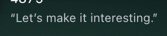
| Hierarchy | Type | Colour | Material | Spacing | Consistency | States | Motion | Legibility | Craft | Apple fidelity | Avg | |
|---|---|---|---|---|---|---|---|---|---|---|---|---|
| Before | 8 | 8 | 8 | 8 | 8 | 8 | 8 | 6 | 7 | 8 | 8 | 7.7 |
| After | 8 | 8 | 8 | 8 | 8 | 8 | 8 | 8 | 7 | 8 | 8 | 7.9 |
Motion: static; fade + 3px rise after the deal would tie it to the action
Legibility: italic at ~13px and ~60% grey is near AA; lift to 65%
Regular 12px ink-2 in curly quotes; fades in after the deal
Flavour text recedes
Legibility: ~55% grey upright on felt near 4.5:1; lift slightly
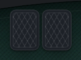
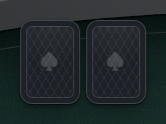
| Hierarchy | Type | Colour | Material | Spacing | Consistency | States | Motion | Legibility | Craft | Apple fidelity | Avg | |
|---|---|---|---|---|---|---|---|---|---|---|---|---|
| Before | 8 | 8 | 8 | 8 | 8 | 8 | 8 | 7 | 8 | 7 | 8 | 7.8 |
| After | 8 | 8 | 8 | 8 | 8 | 8 | 8 | 8 | 8 | 8 | 8 | 8.0 |
Motion: 640ms deal is slow for two cards; use ~420ms spring
Craft: diamond lattice without an emblem reads busy at small size; reduce lattice contrast or add a centre mark
Fine ±60° lattice + 16% spade monogram, soft sheen, single frame; deal 420ms with a soft spring
Calmer pattern
All categories ≥ 8
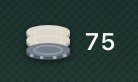
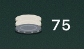
| Hierarchy | Type | Colour | Material | Spacing | Consistency | States | Motion | Legibility | Craft | Apple fidelity | Avg | |
|---|---|---|---|---|---|---|---|---|---|---|---|---|
| Before | 8 | 8 | 8 | 7 | 8 | 8 | 8 | 4 | 8 | 7 | 7 | 7.4 |
| After | 8 | 8 | 8 | 7 | 8 | 8 | 8 | 8 | 8 | 7 | 7 | 7.7 |
Material: stacked chips look translucent grey-green; give them an opaque, lit top face
Motion: static bet; slide from the seat ~320ms so the action reads
Craft: chip edge stripes are faint; refine
On the seat→pot line, 13/600 amount, slides in; crisp chips (no CSS filter blur; the contact shadow is drawn in the SVG)
Physical logic
Material: chip stack is a bone cylinder with a grey base that looks plastic; add top-face highlight and edge stripes
Craft: chip edge has no denominations/stripes and the base ring is muddy; refine
Apple fidelity: chip rendering is less refined than the cards
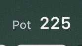
| Hierarchy | Type | Colour | Material | Spacing | Consistency | States | Motion | Legibility | Craft | Apple fidelity | Avg | |
|---|---|---|---|---|---|---|---|---|---|---|---|---|
| Before | 8 | 8 | 8 | 8 | 8 | 8 | 8 | n/a | 8 | 8 | 8 | 8.0 |
| After | 9 | 8 | 8 | 8 | 8 | 8 | 8 | n/a | 8 | 8 | 8 | 8.1 |
'Pot' label as bright as the value
Label 12/500 ink-2, value 17/600
Label/value hierarchy
All categories ≥ 8
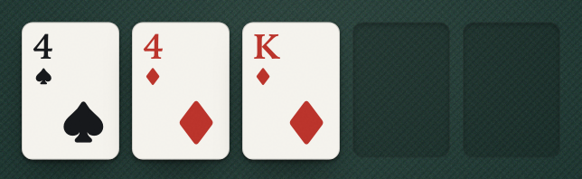
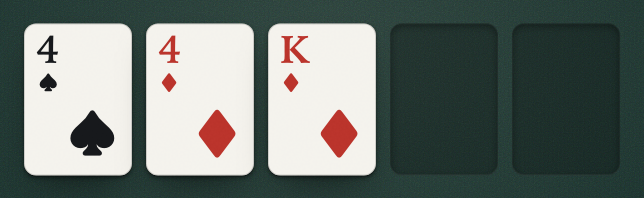
| Hierarchy | Type | Colour | Material | Spacing | Consistency | States | Motion | Legibility | Craft | Apple fidelity | Avg | |
|---|---|---|---|---|---|---|---|---|---|---|---|---|
| Before | 9 | 9 | 8 | 8 | 8 | 8 | 8 | 7 | 9 | 9 | 9 | 8.4 |
| After | 9 | 9 | 8 | 8 | 8 | 8 | 8 | 9 | 9 | 9 | 9 | 8.5 |
Motion: 640ms with 60ms stagger drags for three cards; use ~420ms spring, 45ms stagger
Unchanged artwork; deal 640 → 420ms with a soft spring, 45ms stagger
—
All categories ≥ 8
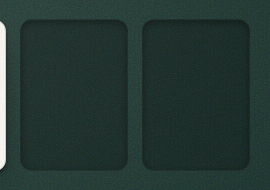
| Hierarchy | Type | Colour | Material | Spacing | Consistency | States | Motion | Legibility | Craft | Apple fidelity | Avg | |
|---|---|---|---|---|---|---|---|---|---|---|---|---|
| Before | 8 | 8 | 8 | 8 | 8 | 8 | 8 | n/a | 8 | 8 | 8 | 8.0 |
| After | 8 | 8 | 8 | 8 | 8 | 8 | 8 | n/a | 8 | 8 | 8 | 8.0 |
Flat dark rectangles crossed by the twill
Deeper inset well (24% black, inset shadow, bottom lip highlight), above the weave; aria-label 'turn/river, to come'
Reads as a recess
All categories ≥ 8
| Hierarchy | Type | Colour | Material | Spacing | Consistency | States | Motion | Legibility | Craft | Apple fidelity | Avg | |
|---|---|---|---|---|---|---|---|---|---|---|---|---|
| Before | 7 | 8 | 8 | 8 | 8 | 8 | 7 | n/a | 7 | 8 | 8 | 7.7 |
| After | 9 | 8 | 8 | 8 | 8 | 8 | 8 | n/a | 8 | 8 | 8 | 8.1 |
Hierarchy: uniform weight means the figures do not lead; set 75 and 25% at 600 white
Legibility: ~60% grey on felt near AA; lift to 70%
States: as information the uniform-weight sentence makes the price harder to read at a glance; set 75 and 25% at 600 white
13px with the two figures in ink-1/500
Decision-relevant numbers lead
All categories ≥ 8
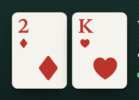
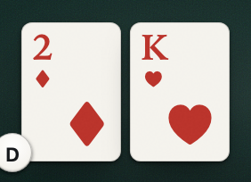
| Hierarchy | Type | Colour | Material | Spacing | Consistency | States | Motion | Legibility | Craft | Apple fidelity | Avg | |
|---|---|---|---|---|---|---|---|---|---|---|---|---|
| Before | 9 | 9 | 8 | 8 | 8 | 8 | 8 | 7 | 9 | 9 | 9 | 8.4 |
| After | 9 | 9 | 8 | 8 | 8 | 8 | 8 | 9 | 9 | 7 | 8 | 8.3 |
Motion: 640ms deal is slow for the hero hand; use ~420ms spring
Unchanged artwork; deal 420ms spring
—
Craft: dealer button overlaps the bottom-left corner of the first card, clipping it; offset it 8px off the card
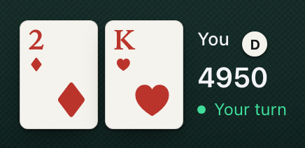
| Hierarchy | Type | Colour | Material | Spacing | Consistency | States | Motion | Legibility | Craft | Apple fidelity | Avg | |
|---|---|---|---|---|---|---|---|---|---|---|---|---|
| Before | 7 | 7 | 8 | 7 | 7 | 7 | 7 | 6 | 8 | 7 | 7 | 7.1 |
| After | 8 | 7 | 8 | 8 | 7 | 8 | 8 | 8 | 8 | 7 | 7 | 7.6 |
Hierarchy: D chip sits in the name line at equal weight to 'You'; move it onto the felt or drop to 18px muted disc.
Type: 'Your turn' 15px matches 'You' 15px so the status competes with the name; set status 13px/500.
Material: Seat cluster has no grounding on the felt; add a soft 0 6px 18px contact shadow under the cards.
Type on the felt; your turn = a soft light pool + the mint status; dealer puck tucked on the left card's corner
One clear to-act treatment
Type: 'Your turn' 16px is larger than the 'You' label; set status 13-14px/500.
Spacing: D puck overlaps the hero card's bottom-left corner by ~8px; keep it 4-6px clear of the card edge.
Craft: Puck clips the card's rounded corner and the '2' index area; move it fully onto the felt.
Apple fidelity: Text column top isn't aligned to card top; align 'You' cap-height to card top + 8px for a composed lockup.
| Hierarchy | Type | Colour | Material | Spacing | Consistency | States | Motion | Legibility | Craft | Apple fidelity | Avg | |
|---|---|---|---|---|---|---|---|---|---|---|---|---|
| Before | 7 | 7 | 8 | 6 | 7 | 7 | 8 | 5 | 8 | 7 | 7 | 7.0 |
| After | 8 | 7 | 8 | 8 | 7 | 8 | 8 | 8 | 8 | 7 | 8 | 7.7 |
Hierarchy: Puck at 22px inline with 'You' reads as a badge on the name, not table state; move to felt.
Type: 'D' 13px/600 heavy in a 22px disc; use 11-12px/700 rounded.
Material: Flat white disc with no rim or contact shadow; add 0.5px inner rim and 0 1px 2px shadow so it reads as a puck.
22px disc, 11px/700, inner rim + top light, on the hero's card corner; arrives with a 420ms spring
Type floor; real button shape
Type: 'D' 13px/600 in a 26px disc slightly heavy; 12px/700 rounded.
Spacing: Overlaps hero card corner; keep 4px clear.
Craft: Overlap clips the card's corner radius; sit fully on the felt.
| Hierarchy | Type | Colour | Material | Spacing | Consistency | States | Motion | Legibility | Craft | Apple fidelity | Avg | |
|---|---|---|---|---|---|---|---|---|---|---|---|---|
| Before | 8 | 7 | 8 | 8 | 8 | 8 | 8 | 7 | 7 | 8 | 7 | 7.6 |
| After | 8 | 7 | 8 | 8 | 8 | 8 | 8 | 7 | 7 | 8 | 7 | 7.6 |
Type: 16px status is larger than the 'You' label; 13-14px/500.
Motion: No onset cue when the turn arrives; fade the dot in over 200ms once.
Legibility: Mint text on green felt ~4.3:1, borderline; lighten mint or use 500 weight.
13/500 mint with a slow 2.4s breathing dot (off under reduced motion)
The most important state reads first
Type: 16px status is larger than the 'You' label; 13-14px/500.
Motion: Continuous 2.4s breathing loop pulls the eye while thinking; run two cycles then rest (already off under reduced motion).
Legibility: Mint text on green felt is ~4.3:1, borderline for 16px/400; lighten mint or use 500 weight.
Apple fidelity: Green dot+green label reads like a web status badge; keep the dot accent and set the label in secondary white.
| Hierarchy | Type | Colour | Material | Spacing | Consistency | States | Motion | Legibility | Craft | Apple fidelity | Avg | |
|---|---|---|---|---|---|---|---|---|---|---|---|---|
| Before | 8 | 8 | 8 | 8 | 8 | 8 | 8 | n/a | 7 | 8 | 8 | 7.9 |
| After | 8 | 8 | 8 | 8 | 7 | 7 | 8 | n/a | 7 | 8 | 8 | 7.7 |
Legibility: Secondary grey on the navy band is ~4.5:1 at 15px; raise to ~62% white for comfortable AA.
12px ink-3 metadata on the same 28px row as the controls
Alignment
Spacing: Baseline sits ~9px above the opposite corner's 'Coach'/'Stats' row; align both corners to one baseline.
Consistency: Corner labels across the top band don't share a row height; set both corners to the same 32px row.
Legibility: Secondary grey on navy ~4.5:1 at 15px; raise to ~62% white.
| Hierarchy | Type | Colour | Material | Spacing | Consistency | States | Motion | Legibility | Craft | Apple fidelity | Avg | |
|---|---|---|---|---|---|---|---|---|---|---|---|---|
| Before | 6 | 8 | 7 | 8 | 6 | 7 | 6 | 6 | 7 | 7 | 6 | 6.7 |
| After | 8 | 8 | 8 | 8 | 8 | 8 | 7 | 9 | 8 | 7 | 8 | 7.9 |
Hierarchy: 'Coach off' and 'Stats' are identical bare text so state and action are indistinguishable; use a switch for Coach.
Colour: No colour carries on/off; a binary setting should show accent on the 'on' track.
Spacing: Row baseline sits ~9px below 'Blinds 25/50'; align corners to one baseline.
'Coach' is a real switch whose track fills mint when on (role map: mint = an ON switch); Stats a tertiary text button 16px away
macOS toggle grammar
States: 'Stats' remains bare text with no rest affordance next to a real control; make it a ghost button or icon.
Craft: Knob is slightly small and the track border heavy; use 2px knob inset and 0.5px track hairline like the macOS mini switch.
| Hierarchy | Type | Colour | Material | Spacing | Consistency | States | Motion | Legibility | Craft | Apple fidelity | Avg | |
|---|---|---|---|---|---|---|---|---|---|---|---|---|
| Before | 8 | 8 | 8 | 7 | 7 | 8 | 8 | 6 | 7 | 8 | 8 | 7.5 |
| After | 8 | 7 | 8 | 7 | 7 | 7 | 8 | 8 | 8 | 7 | 7 | 7.5 |
Material: Dock fill reads near-opaque; drop to ~70% with blur and an 8% top highlight so it floats as glass.
Spacing: Presets float unboxed with ~60px gaps against tight buttons; group into a segmented capsule.
Motion: No entry motion; rise 8px + fade 240ms when your turn begins (fade only under reduced motion).
Lighter, thinner glass (L .32 at 34%, blur 26 / saturate 175%), a 20% top highlight and a gradient rim; r14 = 8 + 6
Visible glass and one control system
Type: '150' 20px/600 is the heaviest figure and competes with Raise; 17px/500 tabular.
Material: Dock fill reads ~90% opaque, a dark slab; drop to ~70% with blur, 8% top-edge highlight.
Spacing: Button heights (64) vs preset capsule (54) vs Raise (66) differ; unify to one control height.
Consistency: All-in carries no hint while F/C/R do; give it 'A' or remove all.
Craft: Boxed keycaps inside bordered buttons inside the dock make three nested radii; render hints as plain trailing text.
Apple fidelity: Nested keycap boxes are non-native; macOS shows shortcuts as trailing secondary text.
| Hierarchy | Type | Colour | Material | Spacing | Consistency | States | Motion | Legibility | Craft | Apple fidelity | Avg | |
|---|---|---|---|---|---|---|---|---|---|---|---|---|
| Before | 8 | 8 | 8 | 7 | 8 | 8 | 7 | 7 | 7 | 8 | 8 | 7.6 |
| After | 8 | 8 | 8 | 7 | 7 | 8 | 8 | 8 | 8 | 7 | 7 | 7.6 |
Material: Flat 8% tiles; add 1px top highlight for a touch of edge light.
States: Hover differs from rest by ~2%, barely visible; ramp 8 to 13 to 18%.
Motion: Press is scale 0.97 with no fill change; darken fill on press.
Secondary ramp (8/13/18%); disabled Check keeps a quiet hairline container and ink-3 text
Distinct states
Material: 8% fills with 1px borders read as flat tiles; add a 1px top highlight and drop border to 0.5px.
Spacing: Keycap sits 12px from right edge vs 24px left padding; balance to 16/16.
Craft: Double box (button border + keycap border) is busy; flatten the keycap to text.
Apple fidelity: Boxed keycaps aren't a macOS idiom; trailing secondary glyph is.
| Hierarchy | Type | Colour | Material | Spacing | Consistency | States | Motion | Legibility | Craft | Apple fidelity | Avg | |
|---|---|---|---|---|---|---|---|---|---|---|---|---|
| Before | 8 | 7 | 8 | 8 | 8 | 7 | 8 | 7 | 7 | 8 | 8 | 7.6 |
| After | 7 | 8 | 8 | 7 | 7 | 8 | 8 | 8 | 8 | 7 | 7 | 7.5 |
Type: Hint at 13px/500 nearly matches the label; use 12px/500 secondary.
Consistency: Elsewhere hints are boxed keycaps or a ↩ glyph; pick one hint style app-wide.
Motion: Press only scales 0.97; add darker press fill.
Trailing keycaps (18px, r4, edge + bottom shade, ink-1 glyph); only real hotkeys get one
Unambiguous shortcuts
Hierarchy: Boxed keycap gives the hint near-equal weight to 'Call 75'; recess it to plain text.
Material: Keycap has its own fill and border inside a filled button, stacked plastic; drop the fill.
Spacing: Keycap sits ~10px from right edge vs 24px left padding; balance.
Craft: Keycap 1px border aliases at DPR2; use a 0.5pt hairline.
Apple fidelity: macOS shows shortcuts as trailing secondary text, not keycaps in buttons.
| Hierarchy | Type | Colour | Material | Spacing | Consistency | States | Motion | Legibility | Craft | Apple fidelity | Avg | |
|---|---|---|---|---|---|---|---|---|---|---|---|---|
| Before | 7 | 7 | 7 | 7 | 7 | 7 | 5 | 6 | 6 | 7 | 7 | 6.6 |
| After | 8 | 7 | 8 | 8 | 7 | 8 | 8 | 9 | 8 | 8 | 8 | 7.9 |
Hierarchy: No filled track left of the thumb, so the amount isn't legible; fill to the thumb.
Type: '150' 600 weight is heavier than the Raise label; 17px/500 tabular.
Colour: Track is one grey; tint the filled segment ~70% white to encode amount.
Track fills to the thumb centre; thumb rim + top light, hover/press scale, focus ring; value in a fixed 40px tabular slot with 8px trailing space
System-grade slider
Type: '150' at 20px is an orphan size against 17px dock labels; 17px tabular.
Spacing: Value sits ~50px past the track; tighten to 16px.
| Hierarchy | Type | Colour | Material | Spacing | Consistency | States | Motion | Legibility | Craft | Apple fidelity | Avg | |
|---|---|---|---|---|---|---|---|---|---|---|---|---|
| Before | 7 | 7 | 8 | 7 | 6 | 6 | 6 | 7 | 7 | 7 | 6 | 6.7 |
| After | 8 | 7 | 8 | 8 | 8 | 8 | 7 | 8 | 8 | 8 | 8 | 7.8 |
Hierarchy: Four presets as bare text at equal weight; group them in one capsule.
Type: ½ ¾ glyphs render smaller/lighter than 'Pot'; use matching size with diagonal-fractions.
Material: No container so they don't read as one control group.
Small segmented group (½ ¾ at 15px, Pot, All-in) with aria-labels; the All-in shortcut in its tooltip; a 2px focus ring at a 2px offset
Grouped presets
Type: ½ ¾ glyphs render smaller/lighter than 'Pot'; use matching size with diagonal-fractions.
States: No selected segment when a preset matches the slider value; show a selected fill.
| Hierarchy | Type | Colour | Material | Spacing | Consistency | States | Motion | Legibility | Craft | Apple fidelity | Avg | |
|---|---|---|---|---|---|---|---|---|---|---|---|---|
| Before | 9 | 8 | 8 | 7 | 8 | 8 | 6 | 7 | 8 | 8 | 7 | 7.6 |
| After | 9 | 8 | 8 | 8 | 8 | 8 | 9 | 9 | 8 | 8 | 8 | 8.3 |
Material: Solid cream slab with no edge light; add 0.5px border and a subtle inner top highlight.
States: Press brightens to pure white (lighter than hover), inverting press physics; darken ~6% on press.
Motion: Press scale 0.97 without fill darkening; pair scale with darker fill.
Bone ramp: hover #FAF8F3, press #E2DFD6, 0.5px dark edge
Press feedback
All categories ≥ 8
| Hierarchy | Type | Colour | Material | Spacing | Consistency | States | Motion | Legibility | Craft | Apple fidelity | Avg | |
|---|---|---|---|---|---|---|---|---|---|---|---|---|
| Before | 8 | 6 | 8 | 7 | 7 | 6 | 7 | 8 | 7 | 8 | 7 | 7.2 |
| After | 8 | 8 | 8 | 8 | 8 | 8 | 7 | 8 | 7 | 8 | 8 | 7.8 |
Type: SURE/GUESS in all caps beside title-case Fold/Check; use title case.
Material: Rim highlight weak, tray reads as a flat dark slab; add 8% top highlight.
Spacing: Input (64px) taller than segmented groups (58px); match heights.
The same thin float glass; 15/600 question; 28px controls; Sure/Guess in title case (the app uppercases in code)
Glass plus aligned controls
States: No rest indication that confidence (Sure/Guess) is still required; show an unselected prompt state.
Legibility: Placeholder ~55% grey (~4:1 at 15px); raise to 60%.
| Hierarchy | Type | Colour | Material | Spacing | Consistency | States | Motion | Legibility | Craft | Apple fidelity | Avg | |
|---|---|---|---|---|---|---|---|---|---|---|---|---|
| Before | 8 | 8 | 8 | 7 | 6 | 7 | 8 | 6 | 8 | 8 | 8 | 7.5 |
| After | 8 | 8 | 8 | 7 | 8 | 8 | 8 | 8 | 8 | 7 | 8 | 7.8 |
Material: Sheet fill ~92% opaque so the glass isn't perceptible; ~75% with blur and a top highlight.
Spacing: ~70px dead space below the helper line vs ~40px top; balance to 32/32.
Consistency: Submit lacks the ↩ hint that other primaries show.
Sheet glass over a strongly dimmed, blurred table (no bloom); 32px field + button; a 1.5px focus ring at a 2px offset; budget as a progressbar; the timer exempt from reduced motion
Material, a11y and a functional timer
Material: Sheet fill near-opaque; ~75% with blur and a top highlight.
Craft: Input focus shows a heavy double ring; use one 3px ring at ~50%.
| Hierarchy | Type | Colour | Material | Spacing | Consistency | States | Motion | Legibility | Craft | Apple fidelity | Avg | |
|---|---|---|---|---|---|---|---|---|---|---|---|---|
| Before | 6 | 7 | 6 | 7 | 7 | 7 | 7 | 7 | 8 | 7 | 7 | 6.9 |
| After | 8 | 8 | 8 | 8 | 7 | 8 | 8 | 9 | 8 | 8 | 8 | 8.0 |
Hierarchy: Two salmon elements (severity + takeaway line) compete; keep red to the severity label, takeaway in primary white 600.
Type: Takeaway 19px/400 coloured sits between the 26px headline and 17px support; set 17px/600.
Colour: Salmon used for badge and a full sentence; accent over-used, reserve for severity.
Two groups and one primary Close; coral only on severity + tick; table dimmed to 30% behind (no bloom); support at 56ch
One headline, one visual, one action
Spacing: 'pot odds' line sits 16px under the headline but ~40px above the divider; even to 24px rhythm.
| Hierarchy | Type | Colour | Material | Spacing | Consistency | States | Motion | Legibility | Craft | Apple fidelity | Avg | |
|---|---|---|---|---|---|---|---|---|---|---|---|---|
| Before | 8 | 8 | 8 | 8 | 8 | 8 | 8 | n/a | 7 | 8 | 8 | 7.9 |
| After | 8 | 8 | 8 | 8 | 8 | 8 | 8 | n/a | 9 | 8 | 8 | 8.1 |
Legibility: Severity carried by salmon colour + word only; add a triangle glyph so it isn't colour-led.
A 13px warning glyph + 'Serious' in coral; no light behind the header
Not colour alone
All categories ≥ 8
| Hierarchy | Type | Colour | Material | Spacing | Consistency | States | Motion | Legibility | Craft | Apple fidelity | Avg | |
|---|---|---|---|---|---|---|---|---|---|---|---|---|
| Before | 7 | 8 | 8 | 8 | 8 | 8 | 8 | 7 | 7 | 7 | 8 | 7.6 |
| After | 8 | 8 | 8 | 8 | 8 | 8 | 8 | 8 | 8 | 8 | 8 | 8.0 |
Hierarchy: No 0/100 anchors so the needle has no scale context; add endpoint labels.
Motion: Single fill grow; stage the surplus band after the fill.
Legibility: 'Needed' marker is a thin salmon tick distinguished by colour; thicken to 2px and stem it to its label.
4px bar: dim fill to the price, bright band for the surplus over it, 2px coral price tick, 0/100% endpoints
The insight is the gap
All categories ≥ 8
| Hierarchy | Type | Colour | Material | Spacing | Consistency | States | Motion | Legibility | Craft | Apple fidelity | Avg | |
|---|---|---|---|---|---|---|---|---|---|---|---|---|
| Before | 8 | 7 | 8 | 8 | 8 | 7 | 8 | n/a | 8 | 8 | 8 | 7.8 |
| After | 8 | 8 | 8 | 8 | 8 | 8 | 8 | n/a | 8 | 8 | 8 | 8.0 |
Type: 'SURE' in caps next to title-case 'Fold'; use 'Sure'.
Consistency: Caps value mismatches the tray's casing.
12px lead-in 'You committed to Fold, Sure' above the neutral result (the result keeps the app's 'SURE')
Calm hierarchy
All categories ≥ 8
| Hierarchy | Type | Colour | Material | Spacing | Consistency | States | Motion | Legibility | Craft | Apple fidelity | Avg | |
|---|---|---|---|---|---|---|---|---|---|---|---|---|
| Before | 8 | 8 | 8 | 8 | 6 | 8 | 8 | n/a | 8 | 8 | 8 | 7.8 |
| After | 8 | 8 | 8 | 8 | 8 | 8 | 8 | n/a | 8 | 8 | 8 | 8.0 |
Spacing: Line length ~95 characters; cap at 60-68ch.
12px ink-2 at 1.55, measure capped at 56ch; copy verbatim
Readable support tier
All categories ≥ 8
| Hierarchy | Type | Colour | Material | Spacing | Consistency | States | Motion | Legibility | Craft | Apple fidelity | Avg | |
|---|---|---|---|---|---|---|---|---|---|---|---|---|
| Before | 7 | 7 | 8 | 8 | 8 | 8 | 8 | 8 | 8 | 6 | 6 | 7.5 |
| After | 8 | 8 | 8 | 7 | 8 | 8 | 7 | 8 | 7 | 7 | 7 | 7.5 |
Hierarchy: Dashed borders + bold weight shout louder than the open/fold split; tone dashes to ~30%.
Type: Bold used as a state marker mixes weights in the grid; use a ring only.
Craft: 1px dashed borders look web-default and break at corners; solid 1.5px ring at ~40% white.
Three states: open 26% flat, fold 3.5%, boundary = a 10px corner notch; 11px; row-staggered fade-in
One channel per meaning
Material: Open cells are opaque mid-grey tiles; lower to ~18% white with a 0.5px edge.
States: Boundary marker is a 14px corner triangle, weak at a glance; strengthen the marker.
Legibility: Boundary signalled only by a small white notch; hard to see and no non-visual cue.
Craft: Corner triangles look default/web; use an inset ring or 4px dot.
Apple fidelity: Notch markers and opaque tiles feel less refined than first-party data grids.
| Hierarchy | Type | Colour | Material | Spacing | Consistency | States | Motion | Legibility | Craft | Apple fidelity | Avg | |
|---|---|---|---|---|---|---|---|---|---|---|---|---|
| Before | 8 | 7 | 8 | 8 | 8 | 8 | 8 | 8 | 8 | 7 | 7 | 7.7 |
| After | 8 | 8 | 8 | 7 | 8 | 8 | 8 | 8 | 8 | 7 | 7 | 7.7 |
Type: Bold label on boundary cells mixes weights; keep weight uniform.
Craft: Dashed borders jitter at corners; solid hairline ring.
Apple fidelity: Dashed outlines aren't system-grade.
Flat cells with a ≥1.6:1 open/fold luminance step; boundary corner notch; hover lift
Crisper data
Material: Opaque #555 tiles read as slabs; translucent fill with 0.5px edge.
Craft: Corner triangle is crude at this zoom; use an inset ring or dot.
Apple fidelity: Tiles feel flat/default.
| Hierarchy | Type | Colour | Material | Spacing | Consistency | States | Motion | Legibility | Craft | Apple fidelity | Avg | |
|---|---|---|---|---|---|---|---|---|---|---|---|---|
| Before | 8 | 8 | 8 | 8 | 8 | 8 | 7 | n/a | 8 | 8 | 8 | 7.9 |
| After | 8 | 8 | 8 | 8 | 8 | 8 | 8 | n/a | 7 | 7 | 8 | 7.8 |
States: Fold state omitted from the legend; add a 'fold' swatch.
Three swatches matching the cells (with a hairline), boundary shown with the same notch
Legend = data
Legibility: Fold swatch is dark-on-dark (~1.3:1); add a hairline border.
Craft: Boundary swatch half-split doesn't match the in-grid corner notch; draw the same notch.
| Hierarchy | Type | Colour | Material | Spacing | Consistency | States | Motion | Legibility | Craft | Apple fidelity | Avg | |
|---|---|---|---|---|---|---|---|---|---|---|---|---|
| Before | 7 | 7 | 8 | 8 | 6 | 7 | 7 | 8 | 7 | 6 | 7 | 7.1 |
| After | 8 | 8 | 8 | 8 | 8 | 8 | 7 | 8 | 7 | 7 | 8 | 7.7 |
Hierarchy: Class name and description inline wrap unevenly; split onto two lines.
Type: '27%' then 'of all hands' inline then a wrapped line is awkward; stack the caption under the figure.
Spacing: Rows wrap to orphans ('KQs', 'or better', 'kicker'); chips' second row crowds the bottom edge.
Wider 288px column; classes as a flat list (name, cells, score; description below); rules 13px; tags; scrolls with an edge fade
Hierarchy and honest non-interactive tags
States: '—' score placeholders look actionable; mute or remove.
Legibility: Final line 'below those.' fades under a mask; remove the mask or add bottom padding.
Craft: Bottom fade clips the last rule line.
| Hierarchy | Type | Colour | Material | Spacing | Consistency | States | Motion | Legibility | Craft | Apple fidelity | Avg | |
|---|---|---|---|---|---|---|---|---|---|---|---|---|
| Before | 7 | 7 | 8 | 8 | 8 | 7 | 7 | 7 | 7 | 8 | 7 | 7.4 |
| After | 8 | 8 | 8 | 8 | 8 | 7 | 8 | 8 | 8 | 7 | 7 | 7.7 |
Hierarchy: Leading shortcut glyph precedes the label ('O open'); move it trailing.
Type: Leading 'O' reads as zero; trailing secondary glyph.
Consistency: Hint leads here but trails in the dock.
Horizontal group (no separators); trailing keycaps 'open O'
Consistent shortcuts
Consistency: Boxed keycaps here vs plain trailing hints elsewhere; one hint style app-wide.
Craft: Keycap box nested in bordered button adds radii noise; flatten to text.
Apple fidelity: Boxed keycaps inside buttons are non-native.
| Hierarchy | Type | Colour | Material | Spacing | Consistency | States | Motion | Legibility | Craft | Apple fidelity | Avg | |
|---|---|---|---|---|---|---|---|---|---|---|---|---|
| Before | 6 | 8 | 8 | 8 | 6 | 7 | 8 | 8 | 8 | 7 | 7 | 7.4 |
| After | 8 | 8 | 8 | 8 | 8 | 8 | 7 | 8 | 8 | 8 | 8 | 7.9 |
Hierarchy: Kinds listed twice (chips and tally rows); merge into one selectable list.
Spacing: Chip row wraps to a ragged second line; use a list.
Consistency: Loose chip set differs from capsule segmented controls elsewhere.
One level-2 picker with a checkmark and the session tally trailing each kind, plus an 'All kinds' total (no duplicate list)
Lists, not wrapping chips
States: Rows don't read as selectable beyond the checkmark; add a hover row highlight.
| Hierarchy | Type | Colour | Material | Spacing | Consistency | States | Motion | Legibility | Craft | Apple fidelity | Avg | |
|---|---|---|---|---|---|---|---|---|---|---|---|---|
| Before | 8 | 8 | 8 | 8 | 8 | 8 | 8 | n/a | 8 | 8 | 8 | 8.0 |
| After | 8 | 7 | 8 | 8 | 8 | 8 | 8 | n/a | 8 | 8 | 8 | 7.9 |
(material only: wallpaper crisp behind text)
22/600 title on the now-frosted coat
—
Type: 34px display line with default tracking; tighten ~-0.4px like SF Display.
| Hierarchy | Type | Colour | Material | Spacing | Consistency | States | Motion | Legibility | Craft | Apple fidelity | Avg | |
|---|---|---|---|---|---|---|---|---|---|---|---|---|
| Before | 7 | 8 | 7 | 8 | 8 | 8 | 8 | 6 | 8 | 8 | 8 | 7.6 |
| After | 8 | 8 | 8 | 8 | 8 | 8 | 8 | 8 | 8 | 8 | 8 | 8.0 |
Hierarchy: Verdict and explanation share one line, diluting the verdict; stack.
Colour: Salmon on both the label and '20%' doubles the alert; keep it on the figure.
Motion: Result appears without a reveal; fade + rise 240ms (fade only under reduced motion).
Band sentence 15/600 ink-1, coral only on the wrong value, the shared stat component, a 320ms reveal
Colour role map; one stat
All categories ≥ 8
| Hierarchy | Type | Colour | Material | Spacing | Consistency | States | Motion | Legibility | Craft | Apple fidelity | Avg | |
|---|---|---|---|---|---|---|---|---|---|---|---|---|
| Before | 8 | 8 | 8 | 8 | 8 | 8 | 8 | n/a | 8 | 8 | 8 | 8.0 |
| After | 8 | 8 | 8 | 8 | 8 | 8 | 8 | n/a | 8 | 8 | 8 | 8.0 |
Small numbered circles fine; spacing tight
Tertiary tabular numerals inside the content edge, 13px at 1.5
Rhythm
All categories ≥ 8
| Hierarchy | Type | Colour | Material | Spacing | Consistency | States | Motion | Legibility | Craft | Apple fidelity | Avg | |
|---|---|---|---|---|---|---|---|---|---|---|---|---|
| Before | 8 | 7 | 8 | 8 | 8 | 7 | 6 | 7 | 8 | 8 | 7 | 7.5 |
| After | 8 | 8 | 8 | 8 | 8 | 8 | 9 | 9 | 8 | 8 | 8 | 8.2 |
Type: Shortcut spelled into the label with an em dash; render as trailing ↩ glyph.
Consistency: Other primaries show the shortcut as a glyph; match.
States: Press goes brighter than rest (inverted); darken ~6% on press.
Bone ramp, trailing keycap ↩
Button spec
All categories ≥ 8